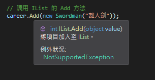

前言
接續物件導向「重構、抽象和介面」。
正文
集合（Collection）
在介紹三大特性時使用 CareerBasic 類別的物件陣列，且設置陣列長度為 6，雖然陣列的優點，在記憶體中連續儲存，可以快速地走訪元素，但缺點就是設置長度，必須先知道需要設置多少的長度才夠使用，但若保險的使用把長度設的過大，又會造成記憶體的浪費，設的過小又造成溢出，還有陣列在兩元素間加入元素也較困難。
所以 .Net Framework 提供用於儲存和檢索專用的類別，統稱為集合。這些類別提供對堆疊、佇列、列比和雜湊表的支持，大多數集合實現了相同的介面：IList，IList 介面定義了許多方法，讓類別去實現。
馬上來看最常使用的 ArrayList，命名空間為 System.Collections;
1 | // 宣告集合，也可以直接宣告 ArrayList career; |
在調用集合的 Add 方法時，參數的型別是 object，不像陣列已經預先指定資料類型，而在這個範例裡類別本身就是 object，假如是其他型別就會有個效能問題。

ArrayList 存放值類型的資料時，需要將值類型裝箱為 Object 物件，使用集合元素時還要執行拆箱，這就帶來了效能耗損，因為在裝箱和拆箱的過程中需要進行大量的運算，當使用集合時也消耗了資源和時間。
裝箱：把值類型打包到 Object 參考類型的一個實體中
1 | int i = 123; |
拆箱：從物件中提取值類型
1 | o = 123; |
泛型（Generic）
泛型由 C# 2.0 推出的新技術，用來解決集合裝箱和拆箱時消耗效能的問題，泛型具有儲存使用一個或多個型別之替代符號。使用泛型集合時需要儲存相同型別，一次到位的感覺，不像集合可以隨心所欲的儲存，再透過裝箱來打包成 Object 型別。
馬上來看 List 類別。使用泛型集合引用的命名空間為 System.Collections.Generic
關鍵用法：在 IList 後面加上 <T>，T 為欲使用或指定的集合資料或物件類型，當宣告完成，T 即為該泛型集合接受的類型，其他類型則不接受。
1 | // 宣告泛型集合，可直接宣告成 List<CareerBasic> career; |
結語
使用泛型集合也解決了類型安全的問題，通常也會建議使用泛型集合（本人我常常被建議，只好來惡補…）
Reference
大話設計模式